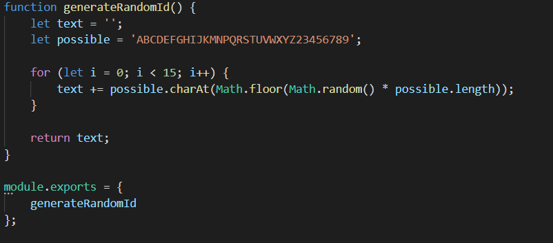
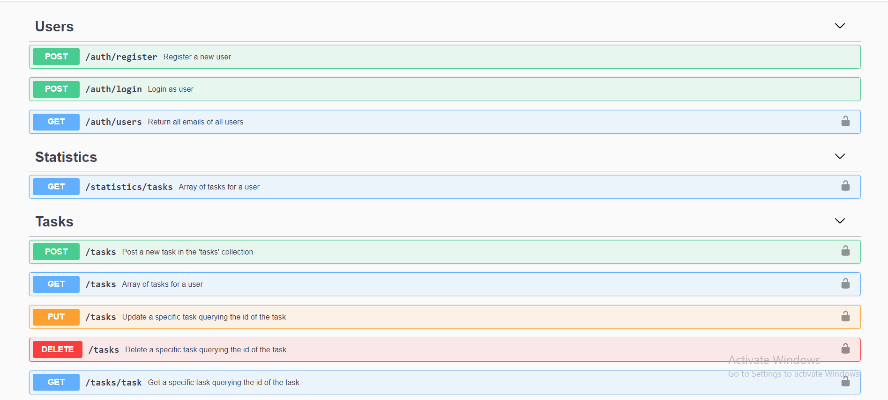

3. Detalii de implementare
3.1. Backend
Baza de date MongoDB care va avea principalele colectii prezentate mai jos.
Codul din backend va contine clasele Task si User care vor face manipulare de informatii pe baza de date si vor avea urmatoarea structura:

Vom utiliza si module pentru servicii si pentru functii helper.
3.2 Frontend
Pentru a mentine cat mai simpla partea de client, vom folosi doar apeluri asincrone catre API, folosind fetch.
Pentru a mentine independenta de conectivitate si pentru a transforma aplicatia intr-un PWA, pe partea de front vom folosi un Service Worker, care va gestiona fisierele si apelurile fetch catre API.
Service Worker-ul va mentine in cache intreaga structura de fisiere si response-urile la apelurile fetch. O portiune din Service Worker ar trebui sa arate asa:
Notificarile vor fi electronice via nodemailer si userii vor primi notificari atunci cand au fost asignati de catre altcineva unui task si atunci cand cineva le raspunde cu pozitiv sau respins la taskul creat de ei:
3.3 API
Endpoint-urile si intreaga schema Backend sunt documentate folosind Swagger la adresa https://tasorapi.herokuapp.com/api-docs/:
3.4 Securitate
Folosim JSON Web Token pentru autentificare si securitate astfel:
La login sau register, folosind _id-ul(email-ul) user-ului, generam pe server un token pe care il trimitem in response catre client
Pentru apeluri la API, clientul trebuie sa includa tagul "Authorization" cu cheia "Bearer token" unde token este jwt-ul trimis de server
Serverul verifica headerul requestului, apoi decodifica jwt-ul si executa mai departe codul!
Un exemplu de verificare a unui token :